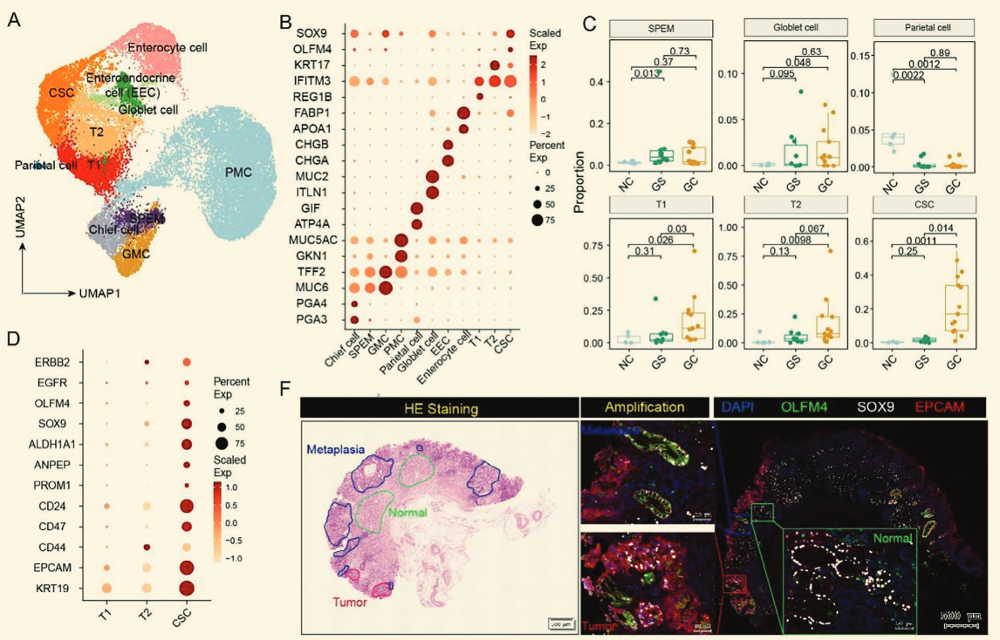
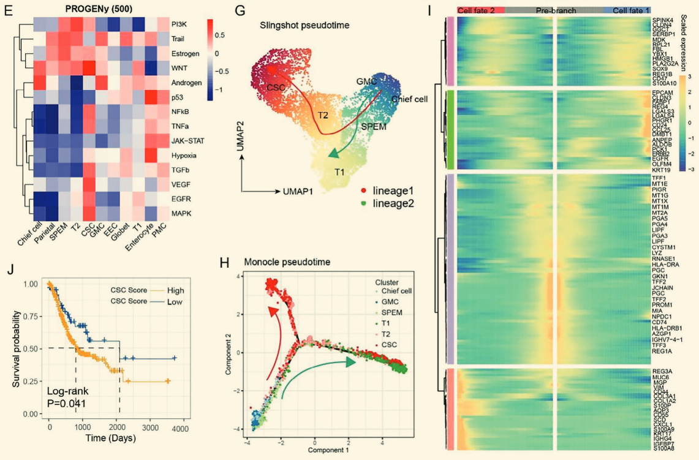

申 明：所有未在正文证明的结论，作者都声称在支撑材料中进行了分析。但仍有一些结论仅仅凭借正文存在相当多的可疑之处。因未能查阅支撑材料细节，本文相关揣测不存在恶意中伤作者的嫌疑，而仅仅是提出学术质疑。
摘要及介绍
本文阐明了肿瘤上皮的表型具有可塑性，以及成熟胃主细胞到肿瘤干细胞的转录轨迹。肿瘤干细胞通过免疫抑制性CXCL13+ T细胞和CCL18+ M2巨噬细胞的互作逃逸免疫监视；炎症相关成纤维细胞（iCAFs）则促进肿瘤生成和维持肿瘤干性，共同构成预后较差的肿瘤干细胞生态位。其中，来自 iCAFs 的双调蛋白通过上调 SOX9 的表达以促进肿瘤干性，并通过 AREG-ERBB2 轴促进耐药性。
胃癌在癌症相关的死因中名列前茅，晚期预后极差，肿瘤干细胞在此过程中至关重要。关于其起源存在争议：层次模型认为其起源于胃黏膜干细胞；随机模型则认为其起源于经历上皮间质转化的肿瘤细胞。本文着重研究了肿瘤干细胞从正常组织化生为癌症组织的细胞和分子景观，强调了其生态位异质性对肿瘤进展的推动作用。
2.1 胃癌进展过程中的动态细胞转录组学景观
为研究胃癌干细胞的演化轨迹，本文选取的样本包含了5个正常人、10个胃炎患者以及13个未接受治疗的胃癌患者。总体采用单细胞空间转录组技术，总计得到了 128,940 个高质量细胞。
通过特定细胞类型标记和拷贝数变异（inferCNV），这些细胞被分为十种主要细胞类型。随后通过基因集变异分析（GSVA）比较了上皮细胞的功能差异，并用 STARTRAC-dist 指数进一步比较了细胞类型百分比的变化。

2.2 癌症干细胞的单细胞和空间转录分析
通过 UMAP 分析，上皮细胞被进一步分解为 11 个主簇。肿瘤性胃转移的特点是从主要细胞过渡到 SPEM 以及壁细胞的丧失。通过 PROGENy 通路活性推断分析证实 CSC 表现出炎症与干性相关通路的激活。

轨迹与动态分析（Slingshot 和 Monocle）揭示了分化轨迹：SPEM细胞源于主细胞转分化，并继而发展为 T2 与 CSC。而空间转录谱分析则直观展示了空间簇 C5 显著富含 CSC 相关的信号通路，证明了其在原位的空间分布特征。

为了表征和可视化CSC原位的空间分布，作者对早期和进展的GC组织做了空间转录谱分析：降维聚类为6类，并展示了聚类效果与感兴趣的干性相关基因表达的空间分布。癌症信号通路分析，基因本体术语分析和PROGENy分析显示，空间簇C5富含CSC相关的信号通路。这些结论也在更晚期的胃癌数据中得到了验证。
这一部分利用了空间数据，并进一步从表达层面说明了CSLC、化生与胃炎细胞的共性。并从图谱中侧面说明了CSLC有更多的上皮来源而非间充质。（这里之所以是癌症干细胞样细胞，是因为这是无监督聚类，CSLC中并没有区分肿瘤细胞与肿瘤干细胞，而后续的功能分析仅仅是证明CSLC具有恶性）

总之这一部分绘制了CSLC的具体位置，除了提供上皮间质来源的侧面证据之外几乎没有实际意义。
2.3 抑制性免疫细胞及其相互作用
肿瘤的免疫微环境同样不可忽视。研究将肿瘤浸润淋巴细胞（TIL）分为 12 类，发现其中三组 T 细胞在胃癌中显著富集，展现出耗竭和细胞毒性特征（如 CXCL13+ CD8 T细胞），且与肿瘤干细胞丰度呈显著正相关。
胞间互作及多重免疫荧光分析发现，SOX9 阳性肿瘤干细胞可通过 NECITIN2-TIGIT 轴与 T 细胞发生高度交互抑制，而 CCL18+ 的巨噬细胞也对不良预后有着直接影响。

2.4 癌症关联成纤维细胞(CAF)的动态特征
癌症相关成纤维细胞（CAF）被划分为6个亚群，通过比例分析发现 iCAF 和 CST1+ mCAF 在胃癌组织中高度富集。功能富集分析（KEGG 和 PROGENy）表明，iCAF 表达高水平的炎性细胞因子、趋化因子及生长因子，并高度激活 IL6 信号通路、缺氧和肿瘤生长信号（如 EGFR、WNT、MAPK 和 TGF-β），这对于维持肿瘤干细胞（CSC）至关重要。相应的生存分析亦证实，iCAF 及其标志基因（AREG、IL24）的高表达往往预示着更差的临床预后。

【质疑】 原文刻意强调了 VEGF 通路的参与，却选择性忽略了更为显著的 WNT 信号通路。更致命的是，作者声称轨迹分析表明 CST1+ mCAF 是细胞分化途径的过渡状态，但该拟时序分析结果与功能分析结果存在极其荒谬的冲突。若功能富集数据准确，CST1+ mCAF 在向终点演化时必然经历“先抑制再反弹”的过山车模式；且拟时序曲线末端出现的“平地起高楼”式的断崖式飙升，恰恰反向证明了在转录谱系上 iCAF 与其他细胞间存在巨大断层。作者回避这一严重违背生物学常识的分析结果，存在利用参数调整强行编造轨迹的嫌疑。
2.5 iCAF与肿瘤干细胞(CSC)的相互作用
胞间通讯研究表明，iCAF 和 CST1+ mCAF 经常与免疫细胞和肿瘤细胞（尤其是 CSC）发生高频的相互作用。作者通过网络中心度分析声称 iCAF 主要通过 WNT 和 EGF 信号通路与 CSC 发生互作；并且空间转录组学结果进一步从物理空间分布上“证实”了 iCAF 与 CSC 在早期和晚期胃癌中存在空间共定位及正相关性。

【质疑】 这一部分展示了极其明显的数据挑选（Cherry-picking）痕迹。首先，作者选择性地无视了微环境中其他与 CSC 高强度互作的亚型细胞；其次，强推的 WNT 信号通路其实在所有显著配受体结果中，绝对互作强度几乎处于垫底水平。最令人费解的是，在抛出一堆显著的强关联配受体对之后，作者宛如“神来之笔”般，毫无依据地单独挑出了 AREG-ERBB2 轴 作为整个互作网络的代表去进行空间共定位验证。结合前文的预后分析，这一选择更像是先射箭后画靶，强行为了迎合后续湿实验而改写了生信数据的解读逻辑。
2.6 iCAFs通过AREG-ERBB2轴显著促进增殖与干性
为弥补生信分析部分跳跃的逻辑闭环，作者在最后这一部分补充了大量的临床前湿实验进行原位与体外验证。通过多重免疫荧光实验（mIF）再次确认了 AREG-ERBB2 确实在胃癌组织中存在空间互作分布。随后开展了 Transwell 共培养、qRT-PCR、肿瘤球体形成试验、集落形成试验及蛋白质印迹分析（Western Blotting）。

各项功能学指标共同表明，AREG-ERBB2 轴作为关键的配体-受体对，能够将 iCAF 直接物理连接到肿瘤细胞，通过下游激活 AKT 信号通路，全方位介导了癌症干细胞特征的维持、肿瘤细胞增殖以及抗药性的产生。由于纯湿实验部分通常具备相对坚实的因果验证逻辑，这套完备的功能学验证，最终为了前面所有充满质疑与强行挑选的生信测序故事提供了一个体面而坚硬的学术背书。